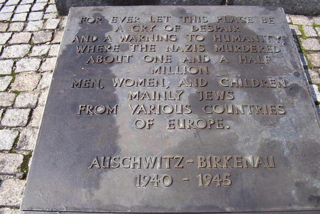

In the midst of the ruined gas chambers and crematoria, there is a large, abstract monument to the victims and two rows of tombstone-like plaques, written in all of the languages that the victims used to speak, with the same text as you see below.

Back to Birkenau
Back to the Homepage